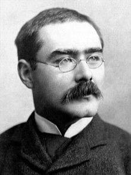
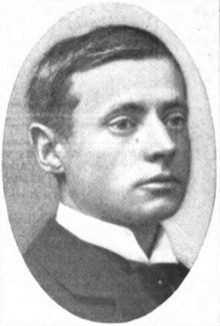
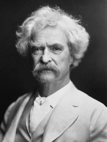
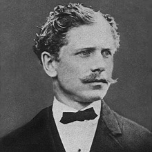
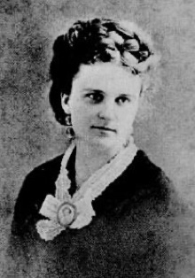
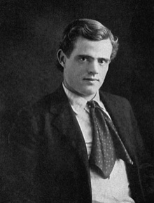

British & American Literature
35 great writers on two branches. Meet each one, then read one of their famous stories.
1 Tap a face2 Meet the writer3 Read their story
All the writers
The same map as a list.
Britain & Ireland
The Stage · 1500s-1600s
Victorian Storytellers · 1830s-1900
 Charles Dickens
Charles Dickens Thomas Hardy
Thomas Hardy Robert Louis Stevenson
Robert Louis Stevenson Arthur Conan Doyle
Arthur Conan Doyle
Rudyard Kipling
W. W. JacobsIrish Voices · 1880s-1930s
 Bram Stoker
Bram StokerA New Century · 1895-1930
America
A New Nation · 1810s-1850s
After the Civil War · 1865-1910

Mark Twain
Ambrose Bierce Sarah Orne Jewett
Sarah Orne Jewett
Kate Chopin Charlotte Perkins Gilman
Charlotte Perkins Gilman O. Henry
O. Henry
Jack London Susan Glaspell
Susan Glaspell F. Scott Fitzgerald
F. Scott Fitzgerald Zora Neale Hurston
Zora Neale Hurston Ray Bradbury
Ray Bradbury